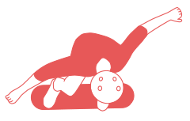

reconversion d'un centre aquatique en skatepark
client : ville de mauléon
paysagiste : talpa
equipements sportifs : minimum skateparks
date : concours fevrier 2025
budget : 260k€
type : équipement
Suite à la fermeture du centre aquatique, la ville de Mauléon souhaite reconvertir cet équipement intérieur et extérieur pour accueillir de nouvelles pratiques sportives de glisse et les vestiaires du club de foot voisin. Les espaces extérieurs s'ouvrent aussi à un public non-sportif comme un parc urbain multi-usages intégrant notamment une aire de camping-cars.
L'analyse des besoins du programme et du gisement de m² à disposition ainsi que des contraintes liées à l'hétérogénéité des usages projetés nous à mené à proposer une entorse au programme en suggérant de loger une partie du skatepark au sein de l'enveloppe bâtie héritée.


Le projet propose de donner une nouvelle vie au centre aquatique de Mauléon. Le bâtiment existant demeure au cœur du projet avec notre proposition débordant du programme demandé afin d’y intégrer un skatepark intérieur « street » permettant une pratique pour tout niveau et affranchie des conditions météorologiques. En effet, les surfaces disponibles offrent l’opportunité de réinventer l’espace. Ce choix permettra ainsi de répondre aux attentes de vestiaires du club de football local tout en créant un espace atypique pour une autre pratique sportive.
En se saisissant du gisement d’espace désaffecté existant, le projet assure sa pérennisation dans la sphère publique en l’occupant littéralement. Cette stratégie de préemption sur les ressources existantes vise à prévenir leur privatisation via la revente de foncier qui est parfois la stratégie par défaut pour évacuer des espaces non immédiatement valorisables. Le choix de l’activité sportive de glisse, déjà présente dans le programme permet de saisir aisément un espace important sans nécessiter des coûts élevés d’entretien et d’usage.